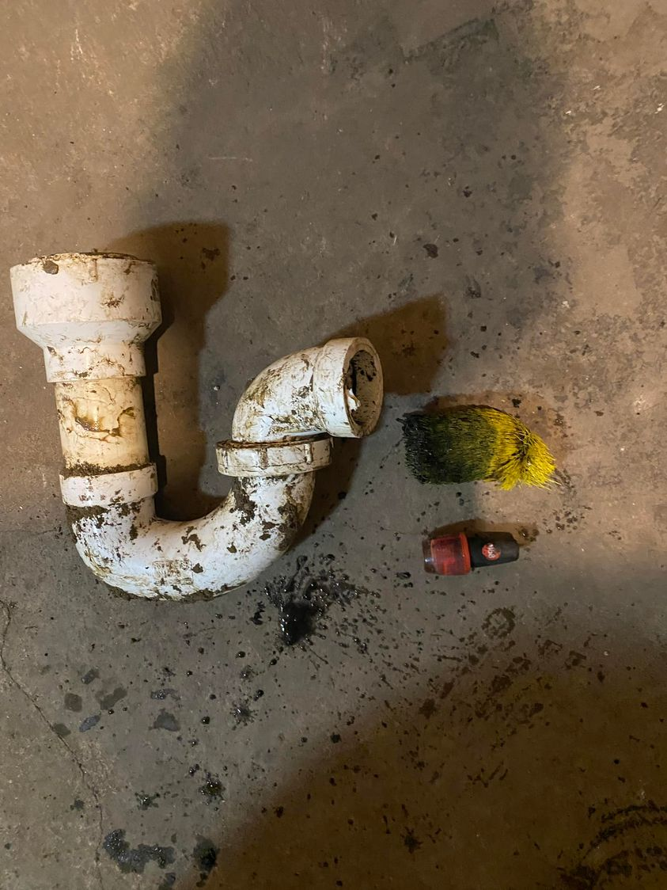

Mobile uploads
This is what I found in my floor drain yesterday. The biggest surprise working with homeless people is all the junk they stuff in all drains.
This stuff was so jammed in this drain that Sully and I had to sledgehammer the floor and cut this drain pipe out of the dirt. That brush-thing was so jammed in the pipe that I needed vice grips to pull it out.
The good news is, the nail polish found in the drain was still good and a homeless woman took it and immediately painted her nails with it.